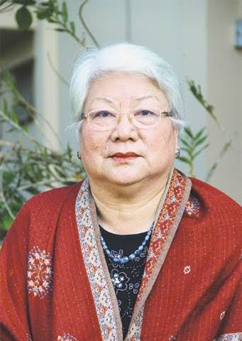

|
 |
About the authorTemsüla Ao (25 October 1945 – 9 October 2022) was an acclaimed Indian writer, poet, and ethnographer from Nagaland. She was a professor of English at North Eastern Hill University (NEHU) from where she retired in 2010. She served as the director of the North East Zone Cultural Centre between 1992 and 1997 on deputation from NEHU. Her works, which include poetry, short stories, and ethnographic studies, often explore themes of identity, cultural heritage, and the socio-political issues of the Northeastern region of India. Among her notable works are the short story collections "These Hills Called Home: Stories from a War Zone" and "Laburnum for My Head." Her book Laburnum For My Head received the Sahitya Akademi Award for English writing in the short story category. She was also awarded the Padma Shri award for her contribution to literature and education. |
Introduction"Aosenla's Story" by Temsula Ao is a powerful narrative that delves into the intricate tapestry of Naga life and culture. After the success of These Hills Called Home and Once Upon a Life, Temsula Ao returns to her beloved Nagaland to bring readers the beautifully crafted story of Aosenla, a woman who is coming to terms with herself. The novel opens on a typical summer afternoon that soon turns into another oppressive evening. Aosenla sits listening to her children playing nearby and is seized by a great lethargy. As she casts a watchful gaze over the house she has called home for so many years, Aosenla wonders how an inanimate structure like a house can exercise such power over a human being. Looking down at a wedding invitation in her hands, Aosenla begins to recall her own wedding many years ago, initiating a deep and moving reflection on the life that others made for her and the life that she eventually created for herself. |
|
|
|
Aosenla:
- Background: Aosenla is the protagonist, representing the struggles and resilience of Naga women. She comes from a traditional Naga background.
- Personality: She is strong, resilient, and determined. Her journey showcases her ability to withstand social pressures and challenges.
- Role: Aosenla’s story is central to the narrative, highlighting the conflicts between traditional values and modernity, and the personal sacrifices she makes in the face of societal expectations.
Aosenla’s Father:
- Background: He embodies the patriarchal values prevalent in traditional Naga society.
- Personality: He is strict, authoritative, and holds firm beliefs about gender roles and societal norms.
- Role: His character represents the societal pressures that Aosenla faces, showcasing the generational and ideological conflicts within the Naga community.
Aosenla’s Mother:
- Background: A traditional Naga woman who adheres to societal norms.
- Personality: She is compassionate but also submissive to the patriarchal structure. She tries to balance her loyalty to her husband and her love for her daughter.
- Role: She represents the older generation of women who accept their roles within the traditional framework, contrasting with Aosenla’s desire for change.
Bendang:
- Background: Aosenla’s love interest who represents modernity and change.
- Personality: He is understanding, supportive, and progressive, in contrast to the traditional male figures in the story.
- Role: Bendang’s character helps highlight the conflict between tradition and modernity, and his relationship with Aosenla is pivotal in her journey towards self-discovery and empowerment.
The Village Elders:
- Background: Represent the traditional authority in the Naga society.
- Personality: They are conservative, uphold customs and traditions, and resist change.
- Role: Their role is to enforce societal norms and maintain the status quo, serving as a barrier to Aosenla’s aspirations and symbolizing the challenges of breaking free from entrenched traditions.

Aosenla’s Story may be fiction, but it touches upon themes that are not at all divorced from our realities. She has heartbreaks that need to be talked about and secrets that need to be shared. She does come close to forming a friendship with the family physician and the good Samaritan of the town, Dr Kilang. But social taboos do not permit her to form a consistent relationship with a man who is not a family member.
Aosenla’s Story examines various other themes with immense social relevance, such as child sexual abuse, teenage pregnancy and its conjunction with social norms and taboos, the power that gossips and secrets hold over us, domestic abuse, bullying, the pressures on a married woman to have a son and being neglected by one’s own family. Aosenla has to directly engage with these scenarios, sometimes through negotiations, sometimes giving in and in many cases, furiously fighting back.
It delves into the conflict between modernity and tradition, highlighting the struggles of a society in transition. The themes are universal, yet deeply rooted in the specific cultural context of the Naga people.
Plot and Storyline"Aosenla's Story" is a richly woven tapestry of personal and communal narratives. The plot follows Aosenla's life, marked by significant events that reflect broader societal changes. The storyline is both engaging and thought-provoking, with a pace that allows for deep character development.
The plot structure of Aosenla’s Story is somewhat jarring. Temsula Ao abandons the temporal narrative and takes us back and forth through different points of time in Aosenla’s life. But one is left with a faint sense of irritation as vital plotlines are opened up and for a long time left open-ended. Many pages later do we find out what exactly happens to that particular sub-part of the story in a disappointingly passing mention. On the other hand, in certain parts of the narrative, certain pivotal points leading up to a crucial moment are stretched for far too long.
We stay with Aosenla throughout this journey. It feels as though we too are becoming more shrewd and growing older and wiser with her. We too are invested in her yearning to do some good in her own small world. The change in Aosenla’s nature is almost tangible in the story’s trajectory. In the beginning of the novel, the readers are introduced to a bright, young and exuberant girl. The middle and end of the story gradually carry us through her transformation with time and ultimately take us to an older woman who prioritises critical evaluations of circumstances over emotion and impulse.
CharactersThe characters in "Aosenla's Story" are multi-dimensional and relatable. Aosenla's strength and vulnerability make her a compelling protagonist. Chuba's complex nature adds depth to the story, while Imdongla's traditional wisdom provides a counterpoint to Aosenla's journey. Each character is meticulously crafted, contributing to the novel's overall impact.